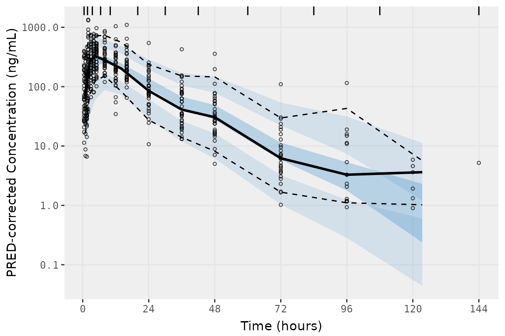
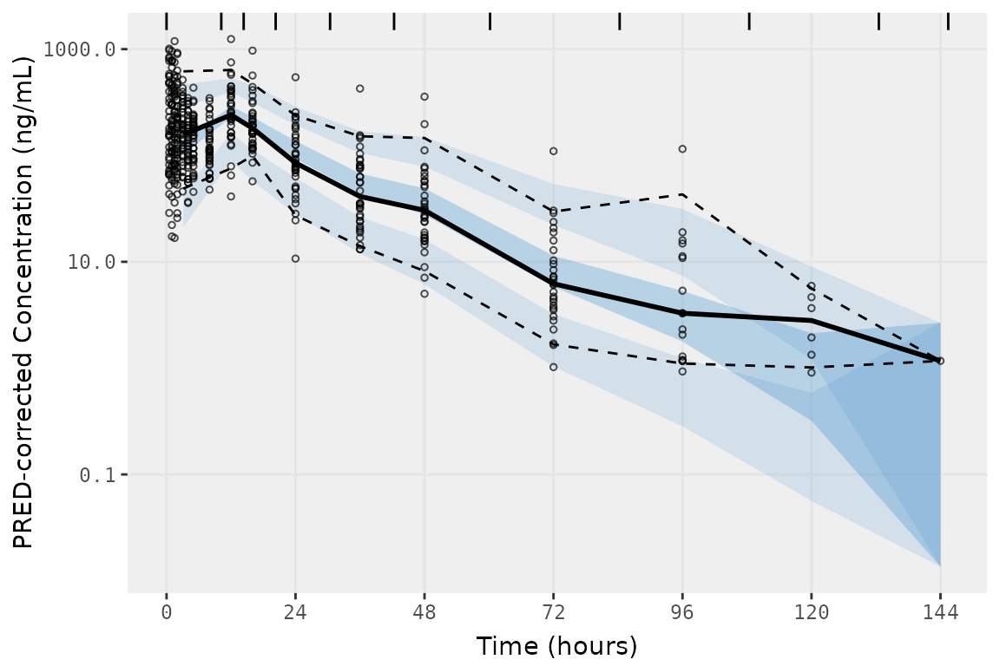
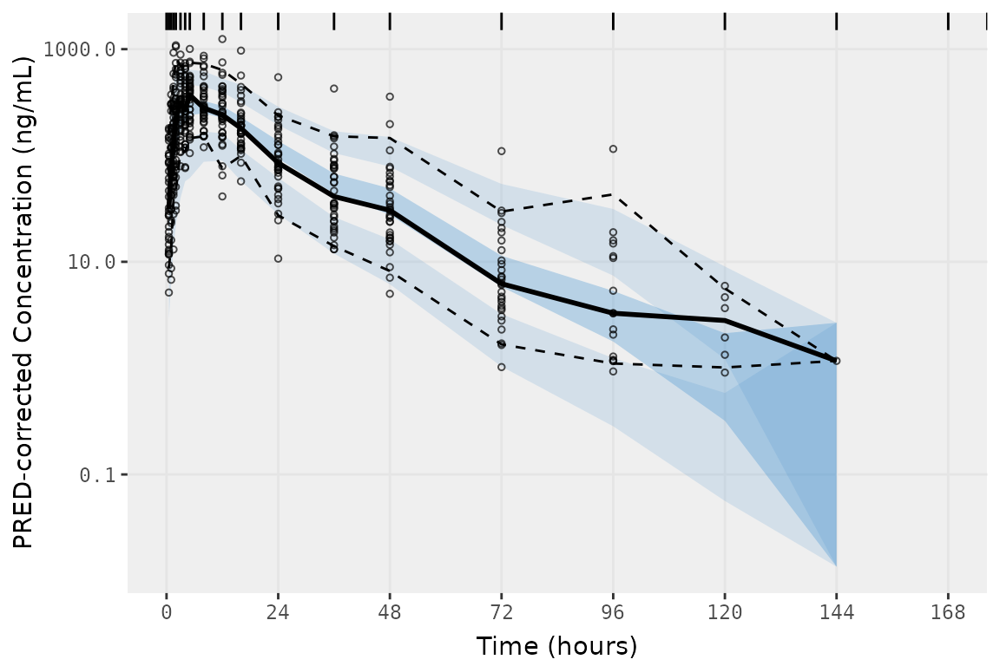
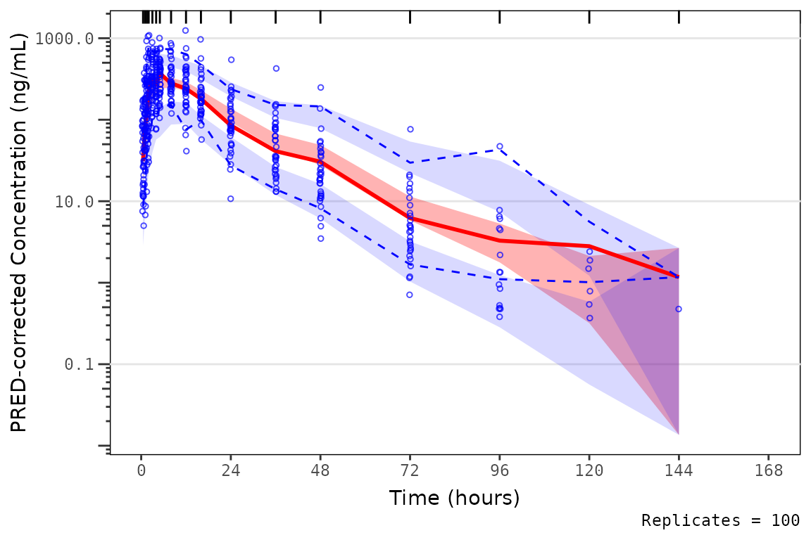
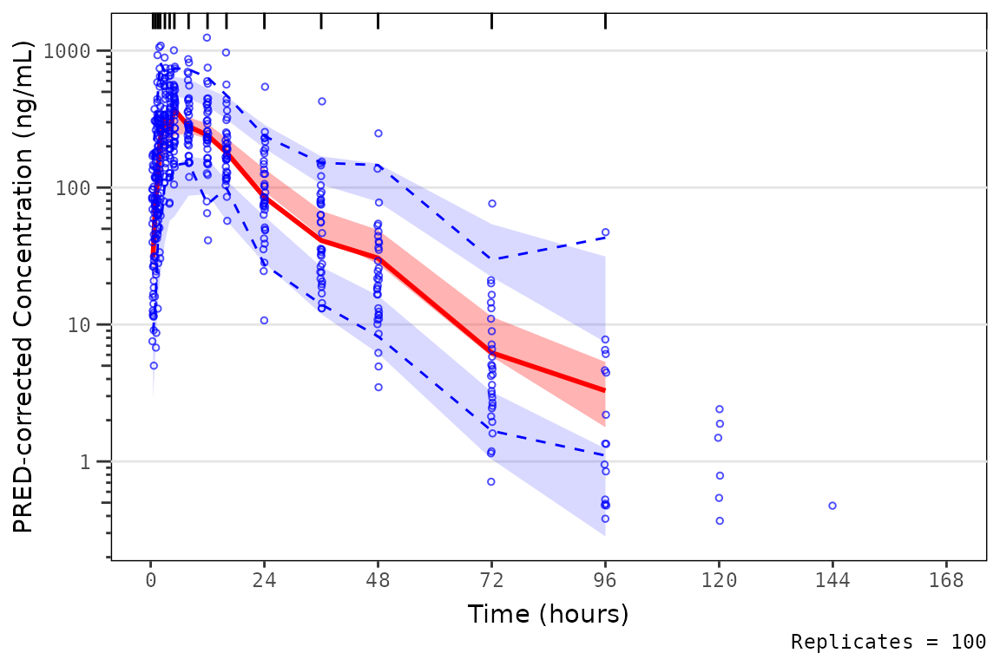

This vignette will review the limitations of the vpc()
function for datasets containing exact bins as the motivating example
for development vpc_plot_exactbins(). First we will load
the required packages.
options(scipen = 999)
library(pmxhelpr)
library(dplyr, warn.conflicts = FALSE)
library(ggplot2, warn.conflicts = FALSE)
library(vpc, warn.conflicts = FALSE)
library(mrgsolve, warn.conflicts = FALSE)Next let’s explore our input dataset data_sad. This
dataset was generated via simulation from the mrgsolve
model internal to the pmxhelpr package. We can take a quick
look at the dataset using glimpse() from the dplyr
package.
glimpse(data_sad)
#> Rows: 720
#> Columns: 23
#> $ LINE <dbl> 1, 2, 3, 4, 5, 6, 7, 8, 9, 10, 11, 12, 13, 14, 15, 16, 17, 18,…
#> $ ID <dbl> 1, 1, 1, 1, 1, 1, 1, 1, 1, 1, 1, 1, 1, 1, 1, 1, 1, 1, 1, 1, 2,…
#> $ TIME <dbl> 0.00, 0.00, 0.48, 0.81, 1.49, 2.11, 3.05, 4.14, 5.14, 7.81, 12…
#> $ NTIME <dbl> 0.0, 0.0, 0.5, 1.0, 1.5, 2.0, 3.0, 4.0, 5.0, 8.0, 12.0, 16.0, …
#> $ NDAY <dbl> 1, 1, 1, 1, 1, 1, 1, 1, 1, 1, 1, 1, 2, 2, 3, 4, 5, 6, 7, 8, 1,…
#> $ DOSE <dbl> 10, 10, 10, 10, 10, 10, 10, 10, 10, 10, 10, 10, 10, 10, 10, 10…
#> $ AMT <dbl> NA, 10, NA, NA, NA, NA, NA, NA, NA, NA, NA, NA, NA, NA, NA, NA…
#> $ EVID <dbl> 0, 1, 0, 0, 0, 0, 0, 0, 0, 0, 0, 0, 0, 0, 0, 0, 0, 0, 0, 0, 0,…
#> $ ODV <dbl> NA, NA, NA, 2.02, 4.02, 3.50, 7.18, 9.31, 12.46, 13.43, 12.11,…
#> $ LDV <dbl> NA, NA, NA, 0.7031, 1.3913, 1.2528, 1.9713, 2.2311, 2.5225, 2.…
#> $ CMT <dbl> 2, 1, 2, 2, 2, 2, 2, 2, 2, 2, 2, 2, 2, 2, 2, 2, 2, 2, 2, 2, 2,…
#> $ MDV <dbl> 1, NA, 1, 0, 0, 0, 0, 0, 0, 0, 0, 0, 0, 0, 1, 1, 1, 1, 1, 1, 1…
#> $ BLQ <dbl> -1, NA, 1, 0, 0, 0, 0, 0, 0, 0, 0, 0, 0, 0, 1, 1, 1, 1, 1, 1, …
#> $ LLOQ <dbl> 1, NA, 1, 1, 1, 1, 1, 1, 1, 1, 1, 1, 1, 1, 1, 1, 1, 1, 1, 1, 1…
#> $ FOOD <dbl> 0, 0, 0, 0, 0, 0, 0, 0, 0, 0, 0, 0, 0, 0, 0, 0, 0, 0, 0, 0, 0,…
#> $ SEXF <dbl> 1, 1, 1, 1, 1, 1, 1, 1, 1, 1, 1, 1, 1, 1, 1, 1, 1, 1, 1, 1, 1,…
#> $ RACE <dbl> 2, 2, 2, 2, 2, 2, 2, 2, 2, 2, 2, 2, 2, 2, 2, 2, 2, 2, 2, 2, 1,…
#> $ AGEBL <int> 25, 25, 25, 25, 25, 25, 25, 25, 25, 25, 25, 25, 25, 25, 25, 25…
#> $ WTBL <dbl> 82.1, 82.1, 82.1, 82.1, 82.1, 82.1, 82.1, 82.1, 82.1, 82.1, 82…
#> $ SCRBL <dbl> 0.87, 0.87, 0.87, 0.87, 0.87, 0.87, 0.87, 0.87, 0.87, 0.87, 0.…
#> $ CRCLBL <dbl> 128, 128, 128, 128, 128, 128, 128, 128, 128, 128, 128, 128, 12…
#> $ USUBJID <chr> "STUDYNUM-SITENUM-1", "STUDYNUM-SITENUM-1", "STUDYNUM-SITENUM-…
#> $ PART <chr> "Part 1-SAD", "Part 1-SAD", "Part 1-SAD", "Part 1-SAD", "Part …We can see that this dataset is already formatted for modeling. It contains NONMEM and mrgsolve reserved variables (e.g., ID, TIME, AMT, EVID, MDV), as well as, the dependent variable of drug concentration in original, untransformed units (ODV) and natural logarithm transformed units (LDV). In addition to the numeric variables there are two character variables: USUBJID and PART. There are two unique values of PART indicating two distinct study cohorts: Single Ascending Dose (SAD) and Food Effect (FE).
unique(data_sad$PART)
#> [1] "Part 1-SAD" "Part 2-FE"This dataset also contains an exact binning variable: Nominal Time (NTIME). This variable represents the nominal time of sample collection relative to first dose per study protocol whereas Actual Time (TIME) represents the actual time the sample was collected.
##Unique values of NTIME
unique(data_sad$NTIME)
#> [1] 0.0 0.5 1.0 1.5 2.0 3.0 4.0 5.0 8.0 12.0 16.0 24.0
#> [13] 36.0 48.0 72.0 96.0 120.0 144.0 168.0
##Comparison of number of unique values of NTIME and TIME
length(unique(data_sad$NTIME))
#> [1] 19
length(unique(data_sad$TIME))
#> [1] 449Let’s visualize the data. First, we will derive a factor variable from DOSE to pass to the color aesthetic, as well as, a dependent variable (DV) with BLQ values imputed to 1/2 x LLOQ.
plot_data <- data_sad %>%
filter(EVID == 0) %>%
mutate(`Dose (mg)` = factor(DOSE),
DV = case_when(BLQ == 0 ~ ODV,
BLQ %in% c(-1, 1) ~ LLOQ/2,
.default = NA_real_),
DNDV = ODV/DOSE)Now let’s plot the data using ODV colored by DOSE and faceted by PART. The concentration-time profiles increase with dose with some potential impact of censoring at the LLOQ in the late terminal phase.
ggplot(aes(x = TIME, y = ODV, col = `Dose (mg)`), data = plot_data)+
geom_point(shape = 1, alpha = 0.5)+
stat_summary(fun = "mean", geom = "point",
aes(x = NTIME, y = ODV, col = `Dose (mg)`), inherit.aes = FALSE) +
stat_summary(fun = "mean", geom = "line",
aes(x = NTIME, y = ODV, col = `Dose (mg)`), inherit.aes = FALSE) +
geom_hline(yintercept = unique(plot_data$LLOQ), linetype = "dashed")+
scale_x_continuous(breaks = seq(0,168,24))+
scale_y_log10()+
facet_wrap(~PART)+
labs(y = "Concentration (ng/mL)", x = "Time Since Dose Administration (hours)")+
theme_bw()Imputing post-dose concentrations below the lower limit of quantification as 1/2 x LLOQ normalizes the late terminal phase of the concentration-time profile. This suggests that the artifact in the late terminal phase is due to censoring of observations below the LLOQ, which impacts lower doses more than higher doses.
ggplot(aes(x = TIME, y = DV, col = `Dose (mg)`), data = plot_data)+
geom_point(shape = 1, alpha = 0.5)+
stat_summary(fun = "mean", geom = "point",
aes(x = NTIME, y = DV, col = `Dose (mg)`), inherit.aes = FALSE) +
stat_summary(fun = "mean", geom = "line",
aes(x = NTIME, y = DV, col = `Dose (mg)`), inherit.aes = FALSE) +
geom_hline(yintercept = unique(plot_data$LLOQ), linetype = "dashed")+
scale_x_continuous(breaks = seq(0,168,24))+
scale_y_log10()+
facet_wrap(~PART)+
labs(y = "Concentration (ng/mL)", x = "Time Since Dose Administration (hours)")+
theme_bw()Luckily for us, someone has already fit a PK model to these data!
Let’s load the mrgsolve model file internal to the pmxhelpr package by
calling model_load() and take a look at it with
mrgsolve::see().
model <- model_load("model")
#> Building model_cpp ... done.
see(model)
#>
#> Model file: model.cpp
#> $PARAM
#> TVCL = 20
#> TVVC = 35.7
#> TVKA = 0.3
#> TVQ = 25
#> TVVP = 150
#> DOSE_F1 = 0.33
#>
#> WT_CL = 0.75
#> WT_VC = 1.00
#> WT_Q = 0.75
#> WT_VP = 1.00
#> FOOD_KA = -0.5
#> FOOD_F1 = 1.33
#>
#> WT = 70
#> DOSE = 100
#> FOOD = 0
#>
#> $CMT GUT CENT PERIPH TRANS1 TRANS2
#>
#> $MAIN
#> double CL = TVCL*pow(WT/70,WT_CL)*exp(ETA_CL);
#> double VC = TVVC*pow(WT/70, WT_VC)*exp(ETA_VC);
#> double Q = TVCL*pow(WT/70,WT_Q)*exp(ETA_Q);
#> double VP = TVVP*pow(WT/70, WT_VP)*exp(ETA_VP);
#> double KA = TVKA*(1+FOOD_KA*FOOD)*exp(ETA_KA);
#> double F1 = 1*(1+FOOD_F1*FOOD)*pow(DOSE/100,DOSE_F1);
#>
#> F_GUT = F1;
#>
#> $ODE
#> dxdt_GUT = -KA*GUT;
#> dxdt_CENT = KA*TRANS1 - (CL/VC)*CENT + (Q/VP)*PERIPH - (Q/VC)*CENT;
#> dxdt_PERIPH = (Q/VC)*CENT - (Q/VP)*PERIPH;
#> dxdt_TRANS1 = KA*GUT - KA*TRANS1;
#> dxdt_TRANS2 = KA*TRANS1 - KA*TRANS2;
#>
#> $OMEGA @labels ETA_CL ETA_VC ETA_KA ETA_Q ETA_VP
#> 0.075 0.1 0.2 0 0
#>
#> $SIGMA @labels PROP
#> 0.09
#>
#> $TABLE
#> capture IPRED = CENT/(VC/1000);
#> capture DV = IPRED*(1+PROP);Unluckily for us, no one has validated this PK model! Therefore, we
need to generate some Visual Predictive Checks (VPCs) to validate the
model. We will use mrgsim_vpc() to run the simulation for
the VPC. This is a wrapper function for mrgsim_df(), which
uses lapply() to iterate the simulation over integers from
1 to replicates.
We can pass data_sad and model from the
previous steps to the data and model arguments, respectively, and run
the simulation for 100 replicates. The names of actual and
nominal time variables in data_sad match the default
arguments; however, our dependent variable is named "ODV",
which must be specified in the output_vars argument. We would like to
recover the numerical variables "DOSE" and
"FOOD" and the character variable "PART" from
the input dataset, as we may need these study conditions to stratify our
VPC plots. We will request "BLQ" and "LLOQ"
for potential assessment of impact of censoring in the VPCs, as well as,
the NONMEM reserved variables "CMT", "EVID",
and "MDV". Finally, we will add the argument
obsonly = TRUE, which is passed to mrgsim(),
to remove dose records from the simulation output and reduce file
size.
simout <- mrgsim_vpc(data = data_sad,
model = model,
replicates = 100,
time_vars = c(TIME = "TIME", NTIME = "NTIME"),
output_vars = c(PRED = "PRED", IPRED = "IPRED", DV = "ODV"),
num_vars = c("CMT", "BLQ", "LLOQ", "EVID", "MDV", "DOSE", "FOOD"),
char_vars = c("PART"),
obsonly = TRUE)
glimpse(simout)
#> Rows: 68,400
#> Columns: 21
#> $ ID <dbl> 1, 1, 1, 1, 1, 1, 1, 1, 1, 1, 1, 1, 1, 1, 1, 1, 1, 1, 1, 2, 2, …
#> $ TIME <dbl> 0.00, 0.48, 0.81, 1.49, 2.11, 3.05, 4.14, 5.14, 7.81, 12.08, 16…
#> $ PRED <dbl> 0.0000000000, 1.0373644222, 2.4699025938, 5.8692716205, 8.67222…
#> $ IPRED <dbl> 0.00000000000, 0.23991271053, 0.58097762508, 1.44344928000, 2.2…
#> $ SIMDV <dbl> 0.0000000000, 0.2070745747, 0.6769646573, 1.8613297145, 1.74160…
#> $ OBSDV <dbl> NA, NA, 2.02, 4.02, 3.50, 7.18, 9.31, 12.46, 13.43, 12.11, 11.0…
#> $ EVID <dbl> 0, 0, 0, 0, 0, 0, 0, 0, 0, 0, 0, 0, 0, 0, 0, 0, 0, 0, 0, 0, 0, …
#> $ CMT <dbl> 2, 2, 2, 2, 2, 2, 2, 2, 2, 2, 2, 2, 2, 2, 2, 2, 2, 2, 2, 2, 2, …
#> $ NTIME <dbl> 0.0, 0.5, 1.0, 1.5, 2.0, 3.0, 4.0, 5.0, 8.0, 12.0, 16.0, 24.0, …
#> $ BLQ <dbl> -1, 1, 0, 0, 0, 0, 0, 0, 0, 0, 0, 0, 0, 1, 1, 1, 1, 1, 1, -1, 0…
#> $ LLOQ <dbl> 1, 1, 1, 1, 1, 1, 1, 1, 1, 1, 1, 1, 1, 1, 1, 1, 1, 1, 1, 1, 1, …
#> $ MDV <dbl> 1, 1, 0, 0, 0, 0, 0, 0, 0, 0, 0, 0, 0, 1, 1, 1, 1, 1, 1, 1, 0, …
#> $ DOSE <dbl> 10, 10, 10, 10, 10, 10, 10, 10, 10, 10, 10, 10, 10, 10, 10, 10,…
#> $ FOOD <dbl> 0, 0, 0, 0, 0, 0, 0, 0, 0, 0, 0, 0, 0, 0, 0, 0, 0, 0, 0, 0, 0, …
#> $ GUT <dbl> 0.00000000000000000, 4.34652773939926984, 4.13276198317304821, …
#> $ CENT <dbl> 0.000000000000, 0.009786371098, 0.023698880423, 0.058880291437,…
#> $ PERIPH <dbl> 0.00000000000, 0.00080390625, 0.00337854545, 0.01621962833, 0.0…
#> $ TRANS1 <dbl> 0.0000000000000000, 0.3188382667608536, 0.5115783540267899, 0.8…
#> $ TRANS2 <dbl> 0.00000000000000, 0.01169414527583, 0.03166313774719, 0.0965661…
#> $ PART <chr> "Part 1-SAD", "Part 1-SAD", "Part 1-SAD", "Part 1-SAD", "Part 1…
#> $ SIM <int> 1, 1, 1, 1, 1, 1, 1, 1, 1, 1, 1, 1, 1, 1, 1, 1, 1, 1, 1, 1, 1, …
max(simout$SIM)
#> [1] 100The maximum value of our replicate count variable (default =
"SIM") indicates that the dataset has been replicated 100
times, as requested with the replicates argument.
Glimpsing the output from mrgsim_vpc() reveals the
following model outputs:
-
PRED(population prediction) -
IPRED(individual prediction) -
SIMDV(simulated dependent variable) -
OBSDV(observed dependent variable).
This simulated dataset is ready for either VPC or pcVPC plotting.
Under the hood, the function df_add_pred() is called to add
PRED to the simulation input dataset before running the
simulation for multiple iterations. This function can also be called to
add PRED to a dataset without running multiple
iterations.
data_sad_pred <- df_add_pred(data = data_sad, model = model)
glimpse(data_sad_pred)
#> Rows: 720
#> Columns: 24
#> $ LINE <dbl> 1, 2, 3, 4, 5, 6, 7, 8, 9, 10, 11, 12, 13, 14, 15, 16, 17, 18,…
#> $ ID <dbl> 1, 1, 1, 1, 1, 1, 1, 1, 1, 1, 1, 1, 1, 1, 1, 1, 1, 1, 1, 1, 2,…
#> $ TIME <dbl> 0.00, 0.00, 0.48, 0.81, 1.49, 2.11, 3.05, 4.14, 5.14, 7.81, 12…
#> $ NTIME <dbl> 0.0, 0.0, 0.5, 1.0, 1.5, 2.0, 3.0, 4.0, 5.0, 8.0, 12.0, 16.0, …
#> $ NDAY <dbl> 1, 1, 1, 1, 1, 1, 1, 1, 1, 1, 1, 1, 2, 2, 3, 4, 5, 6, 7, 8, 1,…
#> $ DOSE <dbl> 10, 10, 10, 10, 10, 10, 10, 10, 10, 10, 10, 10, 10, 10, 10, 10…
#> $ AMT <dbl> NA, 10, NA, NA, NA, NA, NA, NA, NA, NA, NA, NA, NA, NA, NA, NA…
#> $ EVID <dbl> 0, 1, 0, 0, 0, 0, 0, 0, 0, 0, 0, 0, 0, 0, 0, 0, 0, 0, 0, 0, 0,…
#> $ ODV <dbl> NA, NA, NA, 2.02, 4.02, 3.50, 7.18, 9.31, 12.46, 13.43, 12.11,…
#> $ LDV <dbl> NA, NA, NA, 0.7031, 1.3913, 1.2528, 1.9713, 2.2311, 2.5225, 2.…
#> $ CMT <dbl> 2, 1, 2, 2, 2, 2, 2, 2, 2, 2, 2, 2, 2, 2, 2, 2, 2, 2, 2, 2, 2,…
#> $ MDV <dbl> 1, NA, 1, 0, 0, 0, 0, 0, 0, 0, 0, 0, 0, 0, 1, 1, 1, 1, 1, 1, 1…
#> $ BLQ <dbl> -1, NA, 1, 0, 0, 0, 0, 0, 0, 0, 0, 0, 0, 0, 1, 1, 1, 1, 1, 1, …
#> $ LLOQ <dbl> 1, NA, 1, 1, 1, 1, 1, 1, 1, 1, 1, 1, 1, 1, 1, 1, 1, 1, 1, 1, 1…
#> $ FOOD <dbl> 0, 0, 0, 0, 0, 0, 0, 0, 0, 0, 0, 0, 0, 0, 0, 0, 0, 0, 0, 0, 0,…
#> $ SEXF <dbl> 1, 1, 1, 1, 1, 1, 1, 1, 1, 1, 1, 1, 1, 1, 1, 1, 1, 1, 1, 1, 1,…
#> $ RACE <dbl> 2, 2, 2, 2, 2, 2, 2, 2, 2, 2, 2, 2, 2, 2, 2, 2, 2, 2, 2, 2, 1,…
#> $ AGEBL <int> 25, 25, 25, 25, 25, 25, 25, 25, 25, 25, 25, 25, 25, 25, 25, 25…
#> $ WTBL <dbl> 82.1, 82.1, 82.1, 82.1, 82.1, 82.1, 82.1, 82.1, 82.1, 82.1, 82…
#> $ SCRBL <dbl> 0.87, 0.87, 0.87, 0.87, 0.87, 0.87, 0.87, 0.87, 0.87, 0.87, 0.…
#> $ CRCLBL <dbl> 128, 128, 128, 128, 128, 128, 128, 128, 128, 128, 128, 128, 12…
#> $ USUBJID <chr> "STUDYNUM-SITENUM-1", "STUDYNUM-SITENUM-1", "STUDYNUM-SITENUM-…
#> $ PART <chr> "Part 1-SAD", "Part 1-SAD", "Part 1-SAD", "Part 1-SAD", "Part …
#> $ PRED <dbl> 0.0000000000, 0.0000000000, 1.0373644222, 2.4699025938, 5.8692…Okay, so now we have run the vpc simulation and generated an output
dataset (simout) ready to be processed for plotting. The
vpc::vpc()function offers a lot of great functionality to
generate VPC plots, including both the data processing and plotting
steps in one function call. However, although vpc()
contains many great options to automatically identify bins in the data,
it is NOT optimized for input data containing exact bins.
The documentation for vpc() (https://vpc.ronkeizer.com/binning.html) describes the
following binning methods:
-
time: Divide bins equally over time (or whatever independent variable is used). Recommended only when there is no observable clustering in the independent variable. -
data: Divide bins equally over the amount of data ordered by independent variable. Recommended only when data are for nominal timepoints and all datapoints are available. -
density: Divide bins based on data-density, i.e. place the bin-separators at nadirs in the density function. An approximate number of bins can be specified, but it is not certain that the algorithm will strictly use the specified number. More info in?auto_bin(). -
jenks: Default and recommended method. Jenk’s natural breaks optimization, similar to K-means clustering. -
kmeans: K-means clustering. -
pretty,quantile,hclust,sd,bclust,fisher. Methods provided by the classInt package, see the package help for more information.
We can visualize the bins assigned by the various binning approaches
in vpc() using by assigning the plot as an R object and
calling plot_object$data.
Because we have multiple dose levels in the SAD portion of the study,
as well as, a food effect cohort, prediction correction will be used to
plot all the data on a single plot using the argument
pred_corr = TRUE.
vpc_jenks <- vpc(
sim = simout,
obs = filter(simout, SIM == 1),
bins = "jenks", #default
n_bins = "auto",
sim_cols = list(dv = "SIMDV", idv = "NTIME", pred = "PRED"),
obs_cols = list(dv = "OBSDV", idv = "NTIME", pred = "PRED"),
pred_corr = TRUE,
pi = c(0.05, 0.95),
ci = c(0.05, 0.95),
show = list(obs_dv = TRUE),
log_y = TRUE
)
vpc_jenksThis plot looks pretty good! The default binning in
vpc::vpc() produce a very nice looking plot. However, all
of the binning methods internal to vpc() are designed to
determine binning intervals from the actual data. Currently, there is no
method to use exact bins contained in the data in place of
bin intervals determined from the data. The presence of exact
bins in the data is a common scenario in pharmacometrics, as Clinical
Study Protocols usually specify specific Study Visits corresponding ot
each sample, which are associated with a nominal (protocolized) time of
collection.
We can use the nobs_bin() function to calculate and
return a summary data.frame containing the unique exact bin times, count
of non-missing observations (EVID=0 & MDV=0), and count of missing
(EVID=0 & MDV=1) observations.
##Exact bins in the input data
nobs_bin(data_sad, bin_var = "NTIME")
#> # A tibble: 19 × 4
#> NTIME CMT n_obs n_miss
#> <dbl> <dbl> <int> <int>
#> 1 0 2 0 36
#> 2 0.5 2 34 2
#> 3 1 2 36 0
#> 4 1.5 2 36 0
#> 5 2 2 36 0
#> 6 3 2 36 0
#> 7 4 2 36 0
#> 8 5 2 36 0
#> 9 8 2 36 0
#> 10 12 2 36 0
#> 11 16 2 36 0
#> 12 24 2 36 0
#> 13 36 2 36 0
#> 14 48 2 33 3
#> 15 72 2 29 7
#> 16 96 2 16 20
#> 17 120 2 6 30
#> 18 144 2 1 35
#> 19 168 2 0 36
##Bin midpoints and boundaries determined by vpc() using bins = "jenks"
distinct(select(vpc_jenks$data, bin_mid, bin_min, bin_max))
#> Adding missing grouping variables: `strat`
#> # A tibble: 11 × 4
#> # Groups: strat [1]
#> strat bin_mid bin_min bin_max
#> <fct> <dbl> <dbl> <dbl>
#> 1 1 1.01 0.5 2
#> 2 1 3 2 5
#> 3 1 5 5 8
#> 4 1 10 8 16
#> 5 1 16 16 24
#> 6 1 24 24 36
#> 7 1 36 36 48
#> 8 1 48 48 72
#> 9 1 72 72 96
#> 10 1 96 96 120
#> 11 1 123. 120 144The bin_mid variable is wherevpc() will
plot the summary statistics calculated for the observed and simulated
data.
We can clearly see that the default bins = "jenks"
method does not reproduce the exact bins in the observed dataset,
even when passing nominal, rather than actual, time as the
independent variable (idv). How about the other
binning methods native to vpc()? Let’s take a look at
bins = "pretty" next.
vpc_pretty <- vpc(
sim = simout,
obs = filter(simout, SIM == 1),
bins = "pretty",
n_bins = "auto",
sim_cols = list(dv = "SIMDV", idv = "NTIME", pred = "PRED"),
obs_cols = list(dv = "OBSDV", idv = "NTIME", pred = "PRED"),
pred_corr = TRUE,
pi = c(0.05, 0.95),
ci = c(0.05, 0.95),
show = list(obs_dv = TRUE),
log_y = TRUE
)
vpc_prettyThe vpc plot produced with bins = "pretty is
fairly pretty; however, again we can see that the binning is not true to
the exact bins in our dataset, especially at the earlier absorption
phase time-points, which are being largely binned together.
##Exact bins in the input data
nobs_bin(data_sad, bin_var = "NTIME")
#> # A tibble: 19 × 4
#> NTIME CMT n_obs n_miss
#> <dbl> <dbl> <int> <int>
#> 1 0 2 0 36
#> 2 0.5 2 34 2
#> 3 1 2 36 0
#> 4 1.5 2 36 0
#> 5 2 2 36 0
#> 6 3 2 36 0
#> 7 4 2 36 0
#> 8 5 2 36 0
#> 9 8 2 36 0
#> 10 12 2 36 0
#> 11 16 2 36 0
#> 12 24 2 36 0
#> 13 36 2 36 0
#> 14 48 2 33 3
#> 15 72 2 29 7
#> 16 96 2 16 20
#> 17 120 2 6 30
#> 18 144 2 1 35
#> 19 168 2 0 36
##Bin midpoints and boundaries determined by vpc() using bins = "pretty"
distinct(select(vpc_pretty$data, bin_mid, bin_min, bin_max))
#> Adding missing grouping variables: `strat`
#> # A tibble: 9 × 4
#> # Groups: strat [1]
#> strat bin_mid bin_min bin_max
#> <fct> <dbl> <dbl> <dbl>
#> 1 1 3.14 0 10
#> 2 1 14 10 20
#> 3 1 24 20 30
#> 4 1 36 30 40
#> 5 1 48 40 50
#> 6 1 72 70 80
#> 7 1 96 90 100
#> 8 1 120 120 130
#> 9 1 144 140 150The bins = "kmeans" option produces yet another
reasonably visually appealing plot; however, like
bins = "pretty" it groups many of the absorption phase
timepoints together and does not include the last three sampling times
with quantifiable observations in simulated intervals.
vpc_kmeans <- vpc(
sim = simout,
obs = filter(simout, SIM == 1),
bins = "kmeans",
n_bins = "auto",
sim_cols = list(dv = "SIMDV", idv = "NTIME", pred = "PRED"),
obs_cols = list(dv = "OBSDV", idv = "NTIME", pred = "PRED"),
pred_corr = TRUE,
pi = c(0.05, 0.95),
ci = c(0.05, 0.95),
show = list(obs_dv = TRUE),
log_y = TRUE
)
vpc_kmeans
##Exact bins in the input data
nobs_bin(data_sad, bin_var = "NTIME")
#> # A tibble: 19 × 4
#> NTIME CMT n_obs n_miss
#> <dbl> <dbl> <int> <int>
#> 1 0 2 0 36
#> 2 0.5 2 34 2
#> 3 1 2 36 0
#> 4 1.5 2 36 0
#> 5 2 2 36 0
#> 6 3 2 36 0
#> 7 4 2 36 0
#> 8 5 2 36 0
#> 9 8 2 36 0
#> 10 12 2 36 0
#> 11 16 2 36 0
#> 12 24 2 36 0
#> 13 36 2 36 0
#> 14 48 2 33 3
#> 15 72 2 29 7
#> 16 96 2 16 20
#> 17 120 2 6 30
#> 18 144 2 1 35
#> 19 168 2 0 36
##Bin midpoints and boundaries determined by vpc() using bins = "kmeans"
distinct(select(vpc_kmeans$data, bin_mid, bin_min, bin_max))
#> Adding missing grouping variables: `strat`
#> # A tibble: 11 × 4
#> # Groups: strat [1]
#> strat bin_mid bin_min bin_max
#> <fct> <dbl> <dbl> <dbl>
#> 1 1 0.5 0.5 0.75
#> 2 1 1 0.75 1.25
#> 3 1 1.5 1.25 1.75
#> 4 1 2 1.75 2.5
#> 5 1 3 2.5 3.5
#> 6 1 4.5 3.5 6.5
#> 7 1 10 6.5 14
#> 8 1 20 14 30
#> 9 1 41.7 30 60
#> 10 1 72 60 84
#> 11 1 104. 84 144The native binning methods density attempts to bin the
data by finding the nadir in the density function. In this case, we can
try and inform the binning algorithm on how many bins we expect
in the data. Let’s pass the length of the vector of unique
NTIME values in our dataset to the n_bins
argument and see if the density approach can find the
correct bins.
vpc_density <- vpc(
sim = simout,
obs = filter(simout, SIM == 1),
bins = "density",
n_bins = length(unique(simout$NTIME)),
sim_cols = list(dv = "SIMDV", idv = "NTIME", pred = "PRED"),
obs_cols = list(dv = "OBSDV", idv = "NTIME", pred = "PRED"),
pred_corr = TRUE,
pi = c(0.05, 0.95),
ci = c(0.05, 0.95),
show = list(obs_dv = TRUE),
log_y = TRUE
)
vpc_density
Whomp Whomp. bins = "density", like the previous methods
evaluated, grouped most of the absorption phase into a single bin.
##Exact bins in the input data
nobs_bin(data_sad, bin_var = "NTIME")
#> # A tibble: 19 × 4
#> NTIME CMT n_obs n_miss
#> <dbl> <dbl> <int> <int>
#> 1 0 2 0 36
#> 2 0.5 2 34 2
#> 3 1 2 36 0
#> 4 1.5 2 36 0
#> 5 2 2 36 0
#> 6 3 2 36 0
#> 7 4 2 36 0
#> 8 5 2 36 0
#> 9 8 2 36 0
#> 10 12 2 36 0
#> 11 16 2 36 0
#> 12 24 2 36 0
#> 13 36 2 36 0
#> 14 48 2 33 3
#> 15 72 2 29 7
#> 16 96 2 16 20
#> 17 120 2 6 30
#> 18 144 2 1 35
#> 19 168 2 0 36
##Bin midpoints and boundaries determined by vpc() using bins = "density"
distinct(select(vpc_density$data, bin_mid, bin_min, bin_max))
#> Adding missing grouping variables: `strat`
#> # A tibble: 10 × 4
#> # Groups: strat [1]
#> strat bin_mid bin_min bin_max
#> <fct> <dbl> <dbl> <dbl>
#> 1 1 3.14 0 10.2
#> 2 1 12 10.2 14.4
#> 3 1 16 14.4 20.3
#> 4 1 24 20.3 30.4
#> 5 1 36 30.4 42.3
#> 6 1 48 42.3 60.2
#> 7 1 72 60.2 84.3
#> 8 1 96 84.3 108.
#> 9 1 120 108. 133.
#> 10 1 144 133. 145.This leaves us with two methods that divide the data equally into
bins over the range of values in the data: bins = "data"
(equal data density in each bin) and bins = "time" (equal
bin width in time).
vpc_data <- vpc(
sim = simout,
obs = filter(simout, SIM == 1),
bins = "data",
sim_cols = list(dv = "SIMDV", idv = "NTIME", pred = "PRED"),
obs_cols = list(dv = "OBSDV", idv = "NTIME", pred = "PRED"),
pred_corr = TRUE,
pi = c(0.05, 0.95),
ci = c(0.05, 0.95),
show = list(obs_dv = TRUE),
log_y = TRUE
)
vpc_time <- vpc(
sim = simout,
obs = filter(simout, SIM == 1),
bins = "time",
sim_cols = list(dv = "SIMDV", idv = "NTIME", pred = "PRED"),
obs_cols = list(dv = "OBSDV", idv = "NTIME", pred = "PRED"),
pred_corr = TRUE,
pi = c(0.05, 0.95),
ci = c(0.05, 0.95),
show = list(obs_dv = TRUE),
log_y = TRUE
)
vpc_data
vpc_timeThese methods are designed to equalize data density in each bin, which unsurprisingly does not produce binning consistent with the exact bins in our dataset.
##Exact bins in the input data
nobs_bin(data_sad, bin_var = "NTIME")
#> # A tibble: 19 × 4
#> NTIME CMT n_obs n_miss
#> <dbl> <dbl> <int> <int>
#> 1 0 2 0 36
#> 2 0.5 2 34 2
#> 3 1 2 36 0
#> 4 1.5 2 36 0
#> 5 2 2 36 0
#> 6 3 2 36 0
#> 7 4 2 36 0
#> 8 5 2 36 0
#> 9 8 2 36 0
#> 10 12 2 36 0
#> 11 16 2 36 0
#> 12 24 2 36 0
#> 13 36 2 36 0
#> 14 48 2 33 3
#> 15 72 2 29 7
#> 16 96 2 16 20
#> 17 120 2 6 30
#> 18 144 2 1 35
#> 19 168 2 0 36
##Bin midpoints and boundaries determined by vpc() using bins = "data"
distinct(select(vpc_data$data, bin_mid, bin_min, bin_max))
#> Adding missing grouping variables: `strat`
#> # A tibble: 9 × 4
#> # Groups: strat [1]
#> strat bin_mid bin_min bin_max
#> <fct> <dbl> <dbl> <dbl>
#> 1 1 1.25 1 2
#> 2 1 2 2 3
#> 3 1 3.5 3 5
#> 4 1 6.5 5 12
#> 5 1 12 12 16
#> 6 1 20 16 36
#> 7 1 36 36 48
#> 8 1 71.4 48 144.
#> 9 1 0.5 NA NA
##Bin midpoints and boundaries determined by vpc() using bins = "time"
distinct(select(vpc_time$data, bin_mid, bin_min, bin_max))
#> Adding missing grouping variables: `strat`
#> # A tibble: 7 × 4
#> # Groups: strat [1]
#> strat bin_mid bin_min bin_max
#> <fct> <dbl> <dbl> <dbl>
#> 1 1 5.33 0.357 16.4
#> 2 1 24 16.4 32.4
#> 3 1 41.7 32.4 48.3
#> 4 1 72 64.3 80.2
#> 5 1 96 80.2 96.2
#> 6 1 120 112 128
#> 7 1 144 128 144.The pmxhelpr function vpc_plot_exactbins() is a wrapper
function for vpc() which is optimized for input datasets
containing exact bins. This wrapper passes the the unique exact bins
(e.g., Nominal Times) in the input dataset as bin boundaries with the
addition of Inf to the end of the vector to ensure that the
final exact bin is included, rather than set only as a bin boundary.
This functionality can be reproduced using vpc() by passing
a vector of unique exact bins to bins with the addition of
Inf as follows:
bins = c(sort(unique(simout$NTIME)), Inf)
exact_bins <- c(sort(unique(simout$NTIME)), Inf)
vpc_exact_ntime <- vpc(
sim = simout,
obs = filter(simout, SIM == 1),
bins = exact_bins,
sim_cols = list(dv = "SIMDV", idv = "NTIME", pred = "PRED"),
obs_cols = list(dv = "OBSDV", idv = "NTIME", pred = "PRED"),
pred_corr = TRUE,
pi = c(0.05, 0.95),
ci = c(0.05, 0.95),
show = list(obs_dv = TRUE),
log_y = TRUE
)
vpc_exact_ntime
However, this workaround will only work if the idv is set to the
nominal time variable (idv = "NTIME) in both the
sim_cols and obs_cols arguments, which
precludes us from plotting the actual observed data points by actual
time ("TIME") while binned summary statistics are
calculated based on the exact bins defined by nominal time
(NTIME). vpc_plot_exactbins() gets around this
limitation by plotting the observed data in a separate layer on top of
the plot object returned by vpc(), including
prediction-correction of those observed points if
pcvpc = TRUE (also passed along to the
pred_corr argument of vpc())
vpc_exact <- vpc_plot_exactbins(
sim = simout,
pcvpc = TRUE,
time_vars = c(TIME = "TIME", NTIME = "NTIME"),
output_vars = c(PRED = "PRED", IPRED = "IPRED", SIMDV = "SIMDV", OBSDV = "OBSDV"),
pi = c(0.05, 0.95),
ci = c(0.05, 0.95),
log_y = TRUE
)
vpc_exact
The difference in plotting the observed prediction-corrected data
points by "TIME" versus "NTIME" is negligible
for this example dataset, due to the high concordance between
"TIME" and "NTIME" in this well controlled
example Phase 1 study. However, this difference is often much larger for
pooled analyses including later phase clinical studies where plotting
the observed points versus actual time will result in a plot that is
much more representative of the distribution of times in the model
training dataset.
When exploring the bins in the input and output datasets using
plot_vpc_exactbins(), we now can see that they are
consistent! Huzzah!
##Exact bins in the input data
nobs_bin(data_sad, bin_var = "NTIME")
#> # A tibble: 19 × 4
#> NTIME CMT n_obs n_miss
#> <dbl> <dbl> <int> <int>
#> 1 0 2 0 36
#> 2 0.5 2 34 2
#> 3 1 2 36 0
#> 4 1.5 2 36 0
#> 5 2 2 36 0
#> 6 3 2 36 0
#> 7 4 2 36 0
#> 8 5 2 36 0
#> 9 8 2 36 0
#> 10 12 2 36 0
#> 11 16 2 36 0
#> 12 24 2 36 0
#> 13 36 2 36 0
#> 14 48 2 33 3
#> 15 72 2 29 7
#> 16 96 2 16 20
#> 17 120 2 6 30
#> 18 144 2 1 35
#> 19 168 2 0 36
##Bin midpoints and boundaries determined by vpc_plot_exactbins()
distinct(select(vpc_exact$data, bin_mid, bin_min, bin_max))
#> Adding missing grouping variables: `strat`
#> # A tibble: 17 × 4
#> # Groups: strat [1]
#> strat bin_mid bin_min bin_max
#> <fct> <dbl> <dbl> <dbl>
#> 1 1 0.5 0.5 1
#> 2 1 1 1 1.5
#> 3 1 1.5 1.5 2
#> 4 1 2 2 3
#> 5 1 3 3 4
#> 6 1 4 4 5
#> 7 1 5 5 8
#> 8 1 8 8 12
#> 9 1 12 12 16
#> 10 1 16 16 24
#> 11 1 24 24 36
#> 12 1 36 36 48
#> 13 1 48 48 72
#> 14 1 72 72 96
#> 15 1 96 96 120
#> 16 1 120 120 144
#> 17 1 144 144 Infvpc_plot_exactbins() also contains an argument built
around a function we introduced earlier (nobs_bin()). The
argument min_bin_count (default = 1) filters out exact bins
with fewer quantifiable observations than the minimum set by this
argument. Importantly, the observed data points in these small bins are
still plotted; however, they do not influence the calculation
of summary statistics or summary plot elements (shaded intervals,
lines). This provides the greatest fidelity to the data being analyzed
without introducing visual artifacts due to small sample timepoints.
vpc_exact_bin_gt10 <- vpc_plot_exactbins(
sim = simout,
pcvpc = TRUE,
time_vars = c(TIME = "TIME", NTIME = "NTIME"),
output_vars = c(PRED = "PRED", IPRED = "IPRED", SIMDV = "SIMDV", OBSDV = "OBSDV"),
pi = c(0.05, 0.95),
ci = c(0.05, 0.95),
min_bin_count = 10,
log_y = TRUE
)
vpc_exact_bin_gt10
When settingmin_bin_count = 10, summary statistics are
not plotted for the final two timepoint containing only fewer than 10
quantifiable observations; however, the observations themselves are
still plotted.
We can also pass stratifying variables to the argument
strat_vars in order to facet our plots by relevant
extrinsic study design covariates or intrinsic subject covariates. The
stratify variables specified in strat_vars are also passed
to the stratify argument of vpc() in order to
facet the resulting plots. Currently, only up to two variables can be
passed to this argument.
vpc_exact_food <- vpc_plot_exactbins(
sim = mutate(simout, FOOD_f = factor(FOOD, levels = c(0,1), labels = c("Fasted", "Fed"))),
strat_vars = "FOOD_f",
pcvpc = TRUE,
time_vars = c(TIME = "TIME", NTIME = "NTIME"),
output_vars = c(PRED = "PRED", IPRED = "IPRED", SIMDV = "SIMDV", OBSDV = "OBSDV"),
pi = c(0.05, 0.95),
ci = c(0.05, 0.95),
log_y = TRUE
)
vpc_exact_food